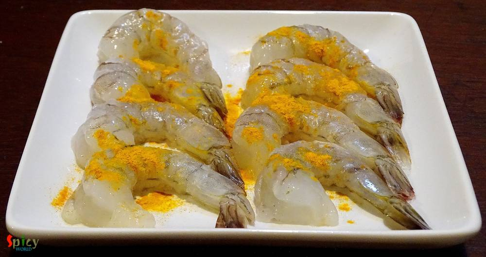
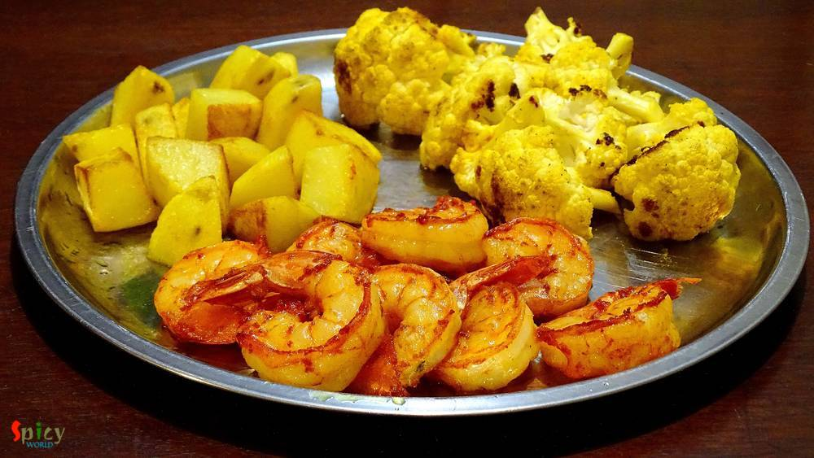
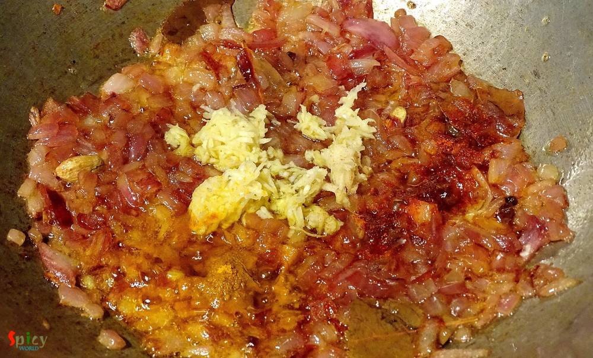
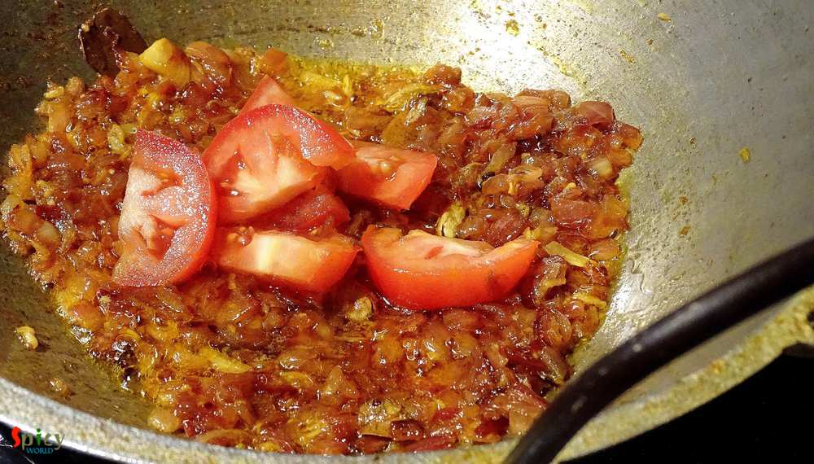
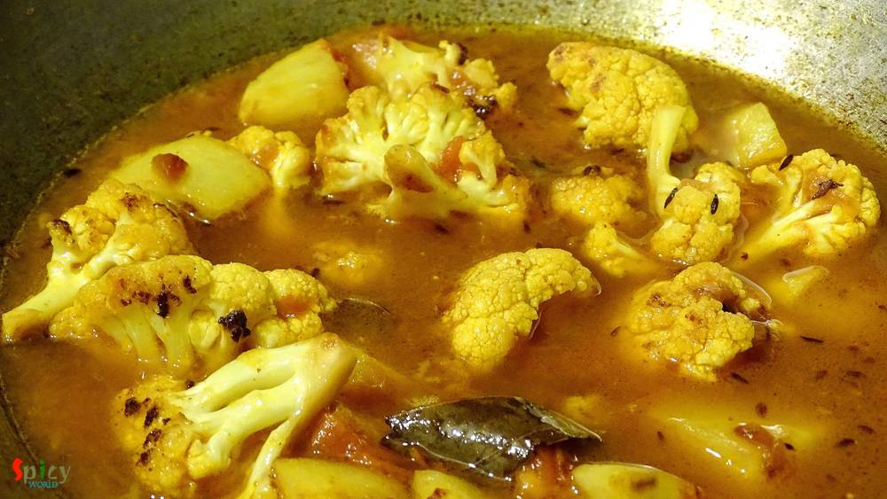
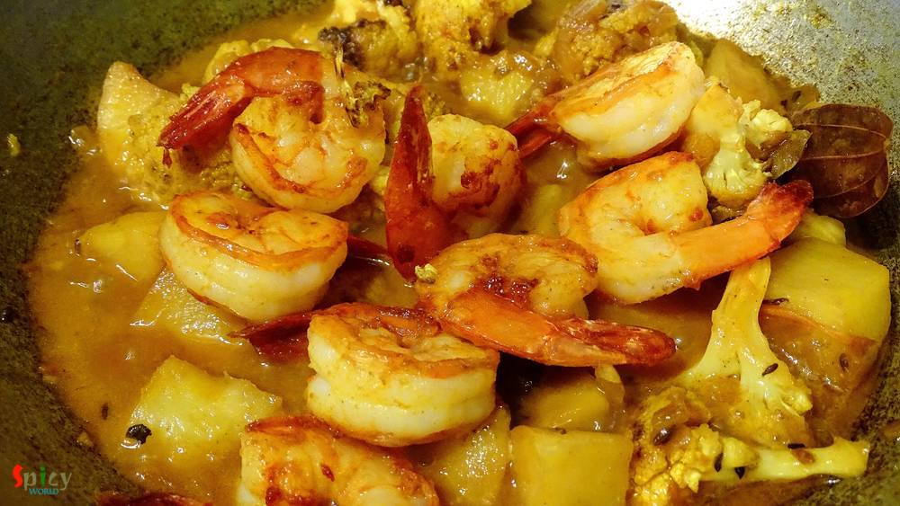
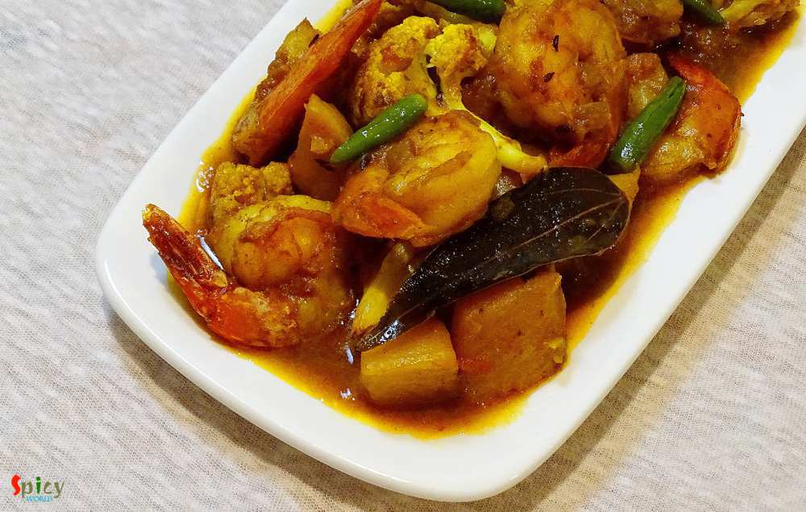

Simple and Easy Recipes
Prawn Curry with Potato and Cauliflower / Aloo Fulkopi diye Chingri macher curry
© 2016 Spicy World, Published on: Mar 15, 2016
This prawn curry is a family recipe and my mom-in-law is an expert of making it. It's a very common fish curry in Bengali households. We love to eat prawns in many forms, but his favorite is this one. I would suggest you to make this dish with small prawns, you will get much more flavours. First I fried the prawns, potato and cauliflowers, then cook them with gravy. Plain rice will go very well with this type of curry. Try this easy recipe in your kitchen and enjoy a good lunch with your family.

Ingredients
- 10 deveined prawns.
- A cup of cubed potatoes.
- Some cauliflower florets.
- 1 onion, chopped.
- 1 Teaspoon of ginger and garlic paste.
- 1 tomato, chopped.
- 3-4 green chilies.
- Whole spices (1 bay leaf, 1 Teaspoon of cumin seeds, 1 dry red chilli)
- Spice powder (1 Teaspoon of cumin powder, Half Teaspoon of red chilli powder, 1 Teaspoon of garam masala)
- Salt and sugar.
- 2 Teaspoons of turmeic powder.
- Water.
- Half cup of mustard oil.

Steps
Wash the prawns very well with water then marinate them with some salt and turmeric powder for 15 minutes.

Then heat oil in a pan.
Fry the prawns for 2 minutes each side. Do not fry them too much otherwise they will become rubbery.
Gradually fry the potatoes and cauliflower florets with some salt and turmeic powder in oil. Keep them aside.

In the remaining oil, add all the whole spices. Saute for a minute.
Then fry the onion till golden in color.

Then add chopped tomatoes. Cook for 5 minutes in medium flame.

Add the fried potatoes and cauliflowers. Mix well and add half cup of water. Cook this for 10-15 minutes or untill everything becomes soft.

Lastly add fried prawns, green chilies and simner for 5 minutes then turn off tge heat.

Let it rest for another 2 - 3 minutes then serve.

Your Prawn curry with Potato and Cauliflower is ready ...
Enjoy this hot curry with steamed rice ...
")